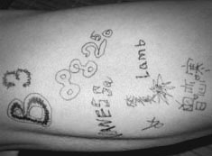
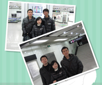
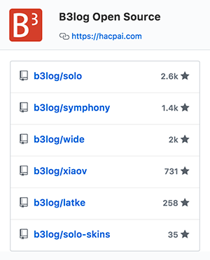

{kind=link}
finding
by Vanessa Download{kind=link}
metro-hot
by Vanessa Download{kind=link}
timeline
by Vanessa Download{kind=link}
ease
by Vanessa Download{kind=link}
mobile
by Dongxu Wang Download{kind=link}
andrea
by Vanessa Download{kind=link}
classic
by Vanessa Download{kind=link}
community
by Vanessa Download{kind=link}
favourite
by LambDownload
{kind=link}
tree-house
by Vanessa Download{kind=link}
i-nove
by Vanessa Download{kind=link}
neoease
by Vanessa Download{kind=link}
owmx
by Dongxu Wang Download{kind=link}
bruce
by 88250 Download{kind=link}
bootstyle
by 答复Download
dashu03
by 大叔Download

{kind=link}
community-bubbles
by Armstrong Download{kind=link}
Dot-B
by Ansen Download{kind=link}
Shawn
by Ansen DownloadCoda
by Ansen Download
5styles
by Noday Download
{kind=link}
idream
by Noday Download- 在线开发：打开浏览器就可以进行开发、全快捷键
- 智能提示：代码自动完成、查看表达式、编译反馈、Lint
- 实时运行：极速编译、实时结果输出
- 团队协同：统一开发环境，分布式开发，代码分享
- DevOps！
B3log 源起
 骚年，坚持想法，坚持实践吧！
骚年，坚持想法，坚持实践吧！
-
B3log 成立

PS 了一晚上才诞生的 logo -
Solo 0.1.0 Preview1
经过一个月的奋斗已经初步成型，终于勇敢的发布了 Preview1。

面对 favicon，
不会 PS 的孩子很受伤 T_T~ -
Solo 0.1.0 发布

咯咯，我是 88250，大家都叫我 D。
怀揣理想的码农，有时候很 2。 -
Solo 0.2.0 发布

咔咔，我就是神出鬼没的 V -
第一位成员 Lamb 的加入
有创意才有新意！
实现梦想，即使在中国！羔羊是我， 我是 Lamb (L) -
DX 加入
负责任务：相信会更多。
一句话飘过：Two heads are always better than one.
土星盐是我，我是 DX -
Jboat 加入
热爱开源，技术菜鸟，很可能是刚好在你之前加入 B3 的那一个。
一句话飘过：热爱生活，相信积累。
Smile to see the distance， 我是 Jboat (J) -
Mainlove 加入

有人为你往前冲是一种幸福，
我是 Mainlove，叫我 Y 吧！ -
Solo 0.3.0 发布
走过 0.2.1、 0.2.5 Beta1、 0.2.5 Beta2、 0.2.5、 0.2.6 后， 0.3.0 总算诞生了。
 0.3.0 活跃贡献者的大名
D: 过个生日伤不起啊~~~~ -
b3log.org 二级域名开放
亲，还在为不能访问你的博客而苦恼？
亲，你不绑定自己的域名？
那，亲，不要再犹豫了，
快来申请 b3log.org 二级域名吧！
亲们，快来申请吧！ -
第三方皮肤
不满意现有 Solo 的皮肤？
想要和他人分享自己亲手做的皮肤？
来 开发第三方皮肤 吧！
第三方皮肤贡献者：
Noday(左上), Ansen(右上),
答复(左下), Chevo(右下) -
收到第一笔捐赠
长期维护一个开源项目的确是不容易的。在一个团队都为这个项目努力的时候，更应该坚持下去。
期待更多的童鞋加入 B3log 团队，一起推进中国开源软件的发展，方便他人。
首位捐赠者，他是 胸毛 -
Solo 0.4.0 发布
这一年团队成员大都换了工作，比较奔波。虽然发布了 0.3.1、 0.3.5、 0.4.0 Beta1、 0.4.0 Beta2， 但 0.4.0 一直拖到现在，在此只能说声抱歉！

今天也是 V 的生日 -
DVLY 上海一夜
有缘千里来相会，无缘对面不相识。
在阴雨连绵的三月，团队成员 D、V、 L、Y 终于在上海会面了。 DX、J 就差你们俩了！ 地铁离别照 -
项目已经迁往 GitHub
 终于抵达 GitHub -
Solo 0.5.0 发布
NOSQL & MYSQL -
Symphony
虽然曾经对游戏有过恋战，对彼此失去过信任....
但今天 Solo 0.5.5 和 Symphony 一起发布了。 欢迎加入 Symphony，与大家一起 - 平等•自由•奔放。
责任重大，游戏需适可而止 -
DASHU 加入
相信机会一定会留给有准备的菜鸟。
好吧，机会还没来，看来还要继续努力。我是有准备的菜鸟大叔 -
Solo 0.6.0 发布
四川加油，让我们为您广播 -
Solo 0.6.5 发布
经历了八个年头断断续续的风雨，D & V 终于走到了一起。 此刻，0.6.1 也在祝福声中诞生了。
随着 DASHU 红本本的到手， 0.6.5 同样也在幸福温馨中发布了。
相亲相爱，相敬如宾 -
Noty
Solo 从 0.6.5 后将只会对其进行维护，不再增加新特性了。
不过，不要沮丧和失望，这一切并没有结束，而是一个全新的开始，欢迎我们的新作品 —— Noty。新的诞生 -
Wide 1.0.0 发布
经过了不断的思索，我们暂停了 Noty 的开发， 毅然决然开始挑战高难度的 Web IDE。在 3 个月的努力后，1.0.0 发布了。

团队开发，随时随地 -
Wide 1.1.0 发布
这是一个全新的世界！ -
Wide 1.2.0 发布
分享乃永恒之道，让我们使用 Playground 来分享您对 Golang 认知的点点滴滴吧！

Solo 0.6.8 也于 2015-3-25 发布了 ^^ -
???
经历了 5 年的风雨，我们不断成长，只为能靠自己的力量给您带来一点点变化。
未知总会带来惊喜